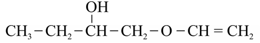
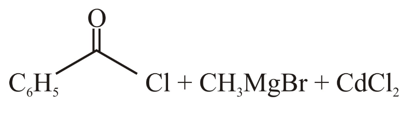

🧪 Amines
58
Total Questions
5
Years
2
Clusters
Question Clusters
CHEM-AMINES-AMINES_BASICITY_PREPARATION
Amines: Amines: Basicity Trends & Preparation
CHEM-AMINES-DIAZONIUM_SALTS_SANDMEYER
Amines: Diazonium Salts & Sandmeyer Reactions
Year-wise Frequency
| Year | Questions | Frequency |
|---|---|---|
| 2021 | 21 | |
| 2022 | 12 | |
| 2023 | 13 | |
| 2024 | 9 | |
| 2025 | 3 |
Questions
Showing first 50 of 58 questions.
Q40 (2021 Shift 2)
Calamine and Malachite, respectively, are the ores of :
CHEM-2021-0101-S2-Q040
Q48 (2021 Shift 2)
Which one of the following gives the most stable Diazonium salt ?

CHEM-2021-0101-S2-Q048
Q48 (2021 Shift 1)
Which of the following reaction DOES NOT involve Hoffmann Bromamide degradation ?

CHEM-2021-0101-S1-Q048
Q50 (2021 Shift 1)
Which among the following pairs of Vitamins is stored in our body relatively for longer duration?
CHEM-2021-0101-S1-Q050
Q47 (2021 Shift 1)
Hoffmann bromamide degradation of benzamide gives product A, which upon heating with CHCl3 and NaOH gives product B. The structures of A and B are:
CHEM-2021-0101-S1-Q047
Q47 (2021 Shift 2)
In the reaction of hypobromite with amide, the carbonyl carbon is lost as:
CHEM-2021-0101-S2-Q047
Q47 (2021 Shift 1)
Compound A is converted to B on reaction with CHCl3 and KOH . The compound B is toxic and can be decomposed by C. A, B and C respectively are:
CHEM-2021-0101-S1-Q047
Q50 (2021 Shift 1)
Thiamine and pyridoxine are also known respectively as:
CHEM-2021-0101-S1-Q050
Q40 (2021 Shift 1)
Which of the following ore is concentrated using group 1 cyanide salt?
CHEM-2021-0101-S1-Q040
Q47 (2021 Shift 2)
The diazonium salt of which of the following compounds will form a coloured dye on reaction with β - Naphthol in NaOH?

CHEM-2021-0101-S2-Q047
Q52 (2021 Shift 2)
1. 86 g of aniline completely reacts to form acetanilide. 10% of the product is lost during purification. Amount of acetanilide obtained after purification (in g ) is ___________ ×10−2.
Answer:
243CHEM-2021-0101-S2-Q052
Q60 (2021 Shift 2)
The total number of amines among the following which can be synthesized by Gabriel synthesis is ________.

Answer:
3CHEM-2021-0101-S2-Q060
Q49 (2021 Shift 2)
Carbylamine test is used to detect the presence of primary amino group in an organic compound. Which of the following compound is formed when this test is performed with aniline?

CHEM-2021-0101-S2-Q049
Q45 (2021 Shift 1)
Given below are two statements, one is labelled as Assertion
CHEM-2021-0101-S1-Q045
Q46 (2021 Shift 1)
Which one of the products of the following reactions does not react with Hinsberg reagent to form sulphonamide?

CHEM-2021-0101-S1-Q046
Q49 (2021 Shift 2)
A biodegradable polyamide can be made from:
CHEM-2021-0101-S2-Q049
Q41 (2021 Shift 1)
Match List- I with List- II . List- List- I II (Ore) (Element Present) Kernite Tin
CHEM-2021-0101-S1-Q041
Q40 (2021 Shift 2)
Match List- I with List- II . List- List- I II
CHEM-2021-0101-S2-Q040
Q48 (2021 Shift 2)
A. Phenyl methanamine B. N, N -Dimethylaniline C. N -Methyl aniline D. Benzenamine Choose the correct order of basic nature of the above amines.
CHEM-2021-0101-S2-Q048
Q48 (2021 Shift 1)
Which of the following is not a correct statement for primary aliphatic amines?
CHEM-2021-0101-S1-Q048
Q38 (2021 Shift 2)
Match List-I with List-II : List-I List-I (Name of ore/mineral) (Chemical formula) a Calamine i ZnS b Malachite ii FeCO3 c Siderite iii ZnCO3 d Sphalerite iv CuCO3 ⋅Cu(OH)2 Choose the most appropriate answer from the options given below :
CHEM-2021-0101-S2-Q038
Q40 (2022 Shift 1)
Match List - I with List - II : List-I List-II
CHEM-2022-0101-S1-Q040
Q48 (2022 Shift 2)
Which of the following ketone will NOT give enamine on treatment with secondary amines? [where t - Bu is -CCH33]

CHEM-2022-0101-S2-Q048
Q47 (2022 Shift 1)
Among the following structures, which will show the most stable enamine formation? (Where Me is −CH3 )
CHEM-2022-0101-S1-Q047
Q49 (2022 Shift 1)
A chemical which stimulates the secretion of pepsin is
CHEM-2022-0101-S1-Q049
Q46 (2022 Shift 2)
Which statement is NOT correct for p-toluenesulphonyl chloride?
CHEM-2022-0101-S2-Q046
Q41 (2022 Shift 1)
Match List - I with List - II. List-I List-II A Concentration of gold ore I Aniline B Leaching of alumina II NaOH C Froth stabiliser III SO2 D Blister copper IV NaCN Choose the correct answer from the options given below.
CHEM-2022-0101-S1-Q041
Q47 (2022 Shift 1)
Given below are two statements : Statement - I : In Hofmann degradation reaction, the migration of only an alkyl group takes place from carbonyl carbon of the amide to the nitrogen atom. Statement - II : The group is migrated in Hofmann degradation reaction to electron deficient atom. In the light of the above statements, choose the most appropriate answer from the options given below
CHEM-2022-0101-S1-Q047
Q48 (2022 Shift 1)
A primary aliphatic amine on reaction with nitrous acid in cold (273 K) and there after raising temperature of reaction mixture to room temperature , gives a/an (298 K)
CHEM-2022-0101-S1-Q048
Q47 (2022 Shift 2)
With respect to the following reaction, consider the given statements:
CHEM-2022-0101-S2-Q047
Q49 (2022 Shift 1)
Which of the following compound does not contain sulphur atom?
CHEM-2022-0101-S1-Q049
Q42 (2022 Shift 2)
Match List I with List II . List I With Ore List II Composition A.Siderite I. FeCO3 B.Malachite II. CuCO3 ⋅Cu(OH)2 C.Sphalerite III. ZnS D.Calamine IV. ZnCO3 Choose the correct answer from the options given below:
CHEM-2022-0101-S2-Q042
Q46 (2022 Shift 2)
In Friedel-Crafts alkylation of aniline, one gets:
CHEM-2022-0101-S2-Q046
Q50 (2023 Shift 1)
Match List I and List II List I List II Functional group / Test Class of Compound
CHEM-2023-0101-S1-Q050
Q49 (2023 Shift 1)
Polymer used in orlon is:
CHEM-2023-0101-S1-Q049
Q50 (2023 Shift 1)
Match List I and List II List I List II Vitamin Deficiency disease A Vitamin A I Beri-Beri B Thiamine II Cheilosis C Ascorbic acid III Xerophthalmia D Riboflavin IV Scurvy Choose the correct answer from the options given below
CHEM-2023-0101-S1-Q050
Q53 (2023 Shift 1)
The mismatched combinations are A. Chlorophyll – Co B. Water hardness – EDTA C. Photography −[Ag(CN)2]− D. Wilkinson catalyst −[(Ph3 P)3 RhCl] E. Chelating ligand –D− Penicillamine Choose the correct answer from the options given below. (1) A, C and E only (2) A and C only (3) A and E only (4) D and E only
Answer:
800CHEM-2023-0101-S1-Q053
Q56 (2023 Shift 2)
Given below are two statements : Statement I : Pure Aniline and other arylamines are usually colourless. Statement II : Arylamines get coloured on storage due to atmospheric reduction. In the light of the above statements, choose the most appropriate answer from the options given below : (1) Both Statement I and Statement II are incorrect (2) Both Statement I and Statement II are correct (3) Statement I is correct but Statement II is (4) Statement I is incorrect but Statement II is incorrect correct
Answer:
314CHEM-2023-0101-S2-Q056
Q41 (2023 Shift 2)
Match List I with List II. Choose the correct answer from the options given below :- List I List II Isomeric pairs Type of isomers Propanamine and N- A I Metamers Methylethanamine Hexan-2-one Positional B Hexan-3-one II isomers Ethanamide and C III Functional isomers Hydroxyethanimine D o-nitrophenol and pnitrophenol IV Tautomers
CHEM-2023-0101-S2-Q041
Q53 (2023 Shift 1)
Chiral complex from the following is : Here en = ethylene diamine (1) cis −[PtCl2(en)2]2+ (2) trans −[PtCl2(en)2]2+ (3) cis −[PtCl2 (NH3)2] (4) trans −[Co (NH3)4 Cl2]+
Answer:
2CHEM-2023-0101-S1-Q053
Q48 (2023 Shift 2)
The major component of which of the following ore is sulphide based mineral?
CHEM-2023-0101-S2-Q048
Q57 (2023 Shift 2)
Reaction of propanamide with Br2 / KOH (aq) produces: (1) Ethylnitrile (2) Propylamine (3) Propanenitrile (4) Ethylamine
Answer:
17CHEM-2023-0101-S2-Q057
Q43 (2023 Shift 1)
To inhibit the growth of tumours, identify the compounds used from the following:
CHEM-2023-0101-S1-Q043
Q48 (2023 Shift 1)
Amongst the following compounds, which one is an antacid?
CHEM-2023-0101-S1-Q048
Q59 (2023 Shift 2)
Given below are two statements: One is labelled as Assertion A and the other labelled as Reason R. Assertion A : Antihistamines do not affect the secretion of acid in stomach. Reason R : Antiallergic and antacid drugs work on different receptors. In the light of the above statements, choose the correct answer from the options given below: (1) A is false but R is true (2) Both A and R are true and R is the correct explanation of A (3) A is true but R is false (4) Both A and R are true but R is not the correct explanation of . A

Answer:
3CHEM-2023-0101-S2-Q059
Q60 (2023 Shift 1)
How many of the transformation given below would result in aromatic amines?

Answer:
3CHEM-2023-0101-S1-Q060
Q49 (2024 Shift 1)
Given below are two statements: Statement (I) : The NH2 group in Aniline is ortho and para directing and a powerful activating group. Statement (II) : Aniline does not undergo FriedelCraft's reaction (alkylation and acylation). In the light of the above statements, choose the most appropriate answer from the options given below:
CHEM-2024-0101-S1-Q049
Q60 (2024 Shift 1)
Xg of ethylamine is subjected to reaction with NaNO2/HCl followed by water; evolved dinitrogen gas which occupied 2.24 L volume at STP. X is ×10−1 g .
Answer:
45CHEM-2024-0101-S1-Q060
Q59 (2024 Shift 2)
From 6.55 g of aniline, the maximum amount of acetanilide that can be prepared will be ______ ×10−1 g .
Answer:
95CHEM-2024-0101-S2-Q059
Q51 (2024 Shift 1)
of pure aniline is treated with bromine water at room temperature to give a white precipitate of the 9.3 g product ' P '. The mass of product ' P ' obtaind is 26.4 g . The percentage yield is _______ % . 10−18 10−31

Answer:
80CHEM-2024-0101-S1-Q051